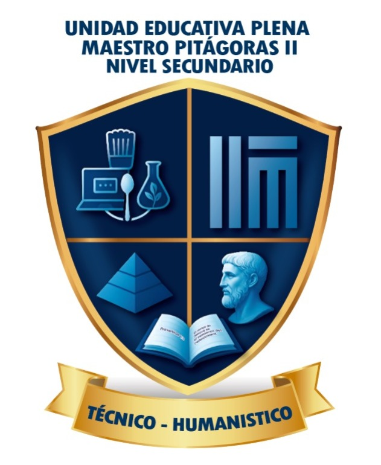

Maestro Pitágoras II Chatbot académico 2026Entrada directa
Escribe una pregunta o usa los botones rápidos. Funciona sin login y con respuestas guardadas en JavaScript.
Responde con la base de datos cargada en esta versión.
Proyecto Productivo · Sistemas Informáticos
Página web responsive con asistente virtual para responder consultas de estudiantes, padres de familia, docentes y administrativos sobre la Unidad Educativa Maestro Pitágoras II.
Hola. Puedo responder sobre docentes, horas, cuotas, matrícula, fechas cívicas y objetivos del proyecto.
¿Cuánto se paga?
La mensualidad es Bs 15 durante 10 meses. Total: Bs 150 por estudiante.
Datos institucionales
Unidad educativa: Técnico Humanístico Maestro Pitágoras II
Nivel: Secundario
Turno: Tarde
Municipio: La Guardia, Santa Cruz, Bolivia
Dirección registrada: La Guardia Km 15, Barrio Cumbre de las Américas
Núcleo escolar: Grigotá
Subdistrito: La Guardia
Gestión: 2026
Implementar un chatbot básico mediante herramientas de programación web y respuestas automatizadas para facilitar el acceso a información institucional y atender consultas relacionadas con la Unidad Educativa Maestro Pitágoras II.
Bs 15 por cada padre de familia por su hijo durante 10 meses.
Total anual: Bs 150
Contacto sugerido: secretaría o dirección de la unidad educativa. El número telefónico no fue proporcionado en los documentos cargados.
| Formulario | 1º | 2º | 3º | 4º | 5º | 6º | Cursos | Total alumnos |
|---|---|---|---|---|---|---|---|---|
| Maestro Pitágoras II | 126 | 127 | 132 | 121 | 109 | 88 | 18 | 703 |
La lista nominal de estudiantes no fue incluida en los archivos cargados, por eso el chatbot responde con cantidades y no con nombres inventados.
Parte de asistencia
Se muestran nombres, cargos, materias y horas. No se publican carnets, firmas ni datos sensibles.
| Nombre | Cargo | Materia / curso | Horas | Formulario |
|---|
Calendario base editable. Para actos internos, dirección puede agregar fechas propias del colegio.